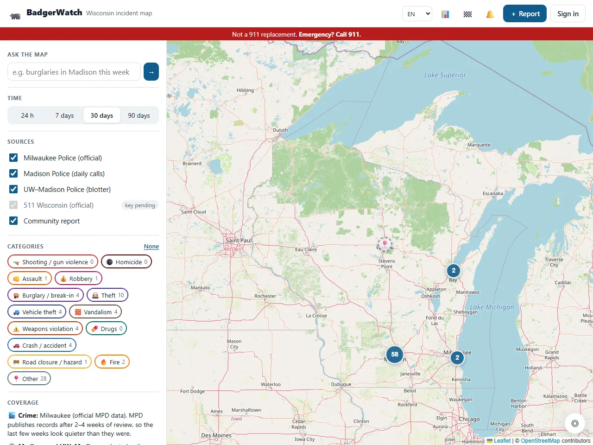

Case study · In development
BadgerWatch
One map of official incident data and community reports from verified users across Wisconsin. Not a replacement for 911.
- React
- Leaflet
- Node.js
- Express
- SQLite
- Web Push

The idea
Official police and traffic sources and community reports, side by side on one map, clearly labeled by source and filterable by time and type.
Trust
Only phone-verified users can post or vote. Neighbors confirm or dispute a report, disputed reports get hidden, and moderators can step in.
Privacy
Community pins are rounded to about 100 meters. Sensitive police calls are skipped by rules, which can miss some. Photo metadata is removed, and a moderator approves each photo.
Alerts
Saved places with a radius, incident types, quiet hours, instant alerts or a daily digest, and browser push.
AI with limits
Optional AI only suggests, or holds a report for review. Moderators decide. Without it, plain rules are used.
What's next
More cities and data sources, reviewed Spanish and Hmong translations, and stronger checks against throwaway accounts.